How a silicon crystal becomes a computer chip, shown in factory photographs, die scans, and electron micrographs.
16 zoomable images/ 8 min read, plus image viewing
scroll
Click or tap an image to enlarge it. In the viewer, scroll or pinch to zoom and drag to pan.
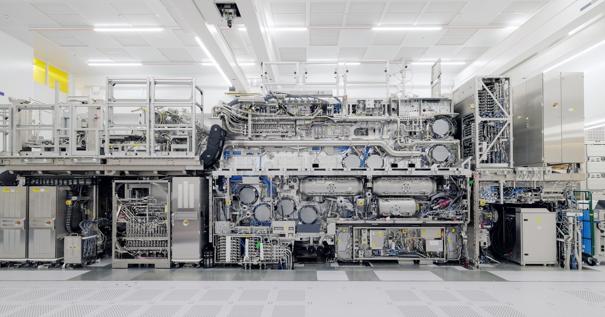
The scanner · ASML High-NA EUV, EXE:5000This scanner projects a circuit pattern onto a light-sensitive coating. High-NA means a larger numerical aperture, an optical property that improves resolution. ASML's first EXE:5000 modules shipped in December 2023; the joint ASML-imec development lab opened in 2024. It's a newer tool than the one used to make the M1 below. It also performs one stage of fabrication: exposure.
The Apple M1 contains 16 billion transistors, tiny devices that control electric current. Making them takes a factory full of tools. Lithography uses light to define a pattern; etching removes material; deposition adds it. The images here move through that work and then into smaller structures. They come from different factories, devices, and years. The two M1 images show the same processor design.
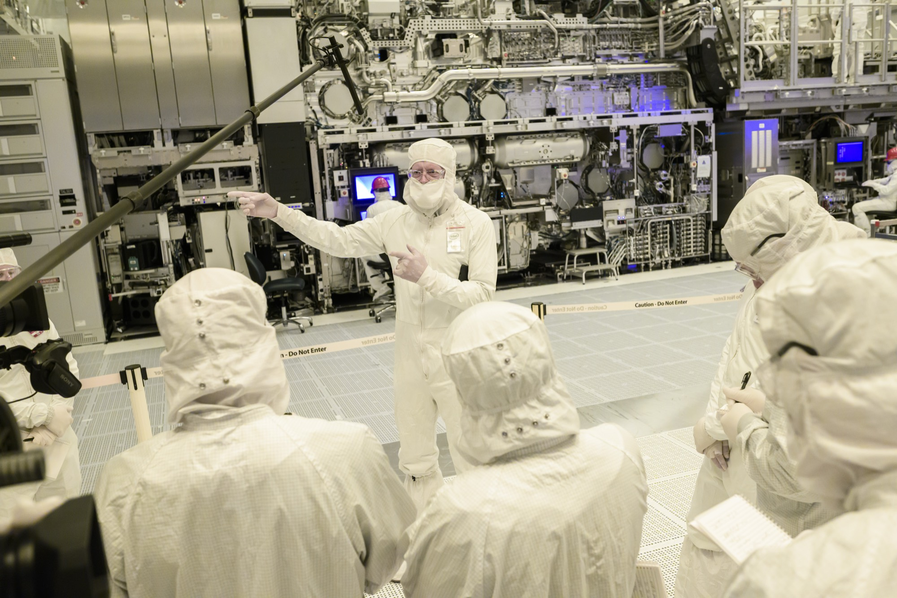
The cleanroom · Intel, High-NA installationThe suits help keep particles shed by people away from the machinery and wafers. A particle that interrupts a fine pattern can spoil a device. Cleanliness is controlled throughout the factory and within the tools. This is an Intel cleanroom photograph, a different site from the ASML-imec scanner image.
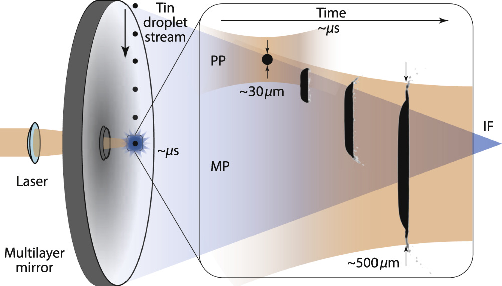
The light source · schematic, not a photograph · 13.5 nmA weak laser pulse reshapes a tin droplet; a stronger pulse turns it into plasma, a hot gas of charged particles. A collector mirror gathers radiation near 13.5 nm, the wavelength used for EUV exposure. The plasma emits other wavelengths too. ASML describes 50,000 droplet cycles per second. EUV is absorbed by air and ordinary lens materials, so mirrors guide it through a vacuum. Versolato's diagram shows the source, not the whole scanner.
purification and crystal growth
A single crystal
Silicon for chips starts with purification. In the Siemens process, silicon metal is converted into trichlorosilane, a compound that can be distilled to separate unwanted substances. In a reactor, silicon is deposited from the gas onto heated rods. Those rods contain many crystals; the wafer needs one.
A seed crystal is dipped into molten silicon and slowly pulled upward while rotating. The solid growing beneath it takes the seed's crystal orientation. This Czochralski process produces a single-crystal ingot, also called a boule. Wafer makers can deliberately add small amounts of boron or phosphorus to set its electrical properties. High purity means controlling unwanted impurities, not banning every atom of another element.
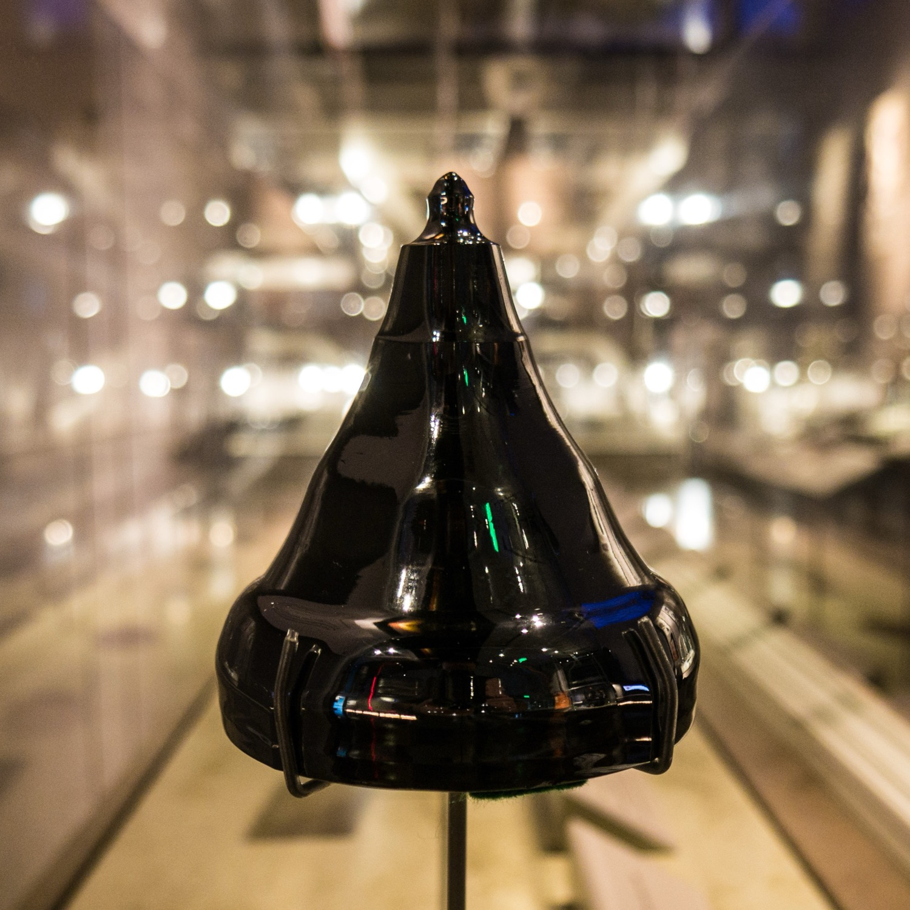
The crystal · a silicon bouleThe tapered neck records where the crystal was pulled from its seed. The wider body supplies material for wafers. Single crystal describes the repeating atomic orientation through the material; it doesn't promise a perfectly defect-free lattice. Photograph by Don DeBold.
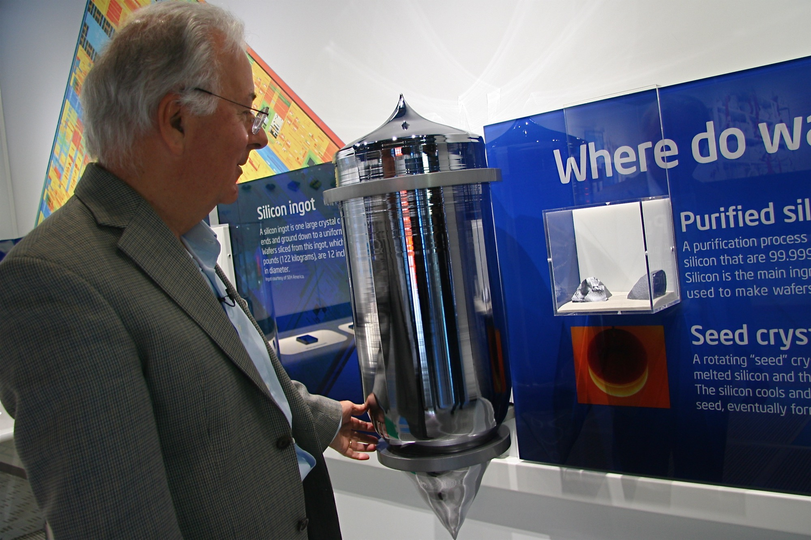
For scale · Intel headquarters, 2011Federico Faggin beside a displayed silicon ingot during a visit marking the Intel 4004's anniversary. He led that processor's chip design. The photo record identifies the visit, but doesn't give this ingot's weight, length, or wafer yield. The ingot's usable length, slice thickness, and material lost to sawing determine the number of wafers.
sawing and polishing
Into a wafer
Sawing turns the ingot into discs. SUMCO describes slices about 0.04 inches thick, cut with a wire saw or an inner-diameter saw. Lapping brings them to the required thickness, chemical etching removes surface damage, and polishing gives them a mirror finish. Large production wafers are about 12 inches across.
Smoothness and flatness describe different things. Local surface roughness measures tiny irregularities over a small patch. Flatness concerns the shape over a larger area; thickness variation compares the two faces. A mirror finish doesn't mean the entire wafer is flat to a fraction of a nanometer. A 2007 NIST experiment, for example, achieved about 40 nm of total thickness variation on a full wafer. That's an experimental result, not a specification for every wafer sold today.
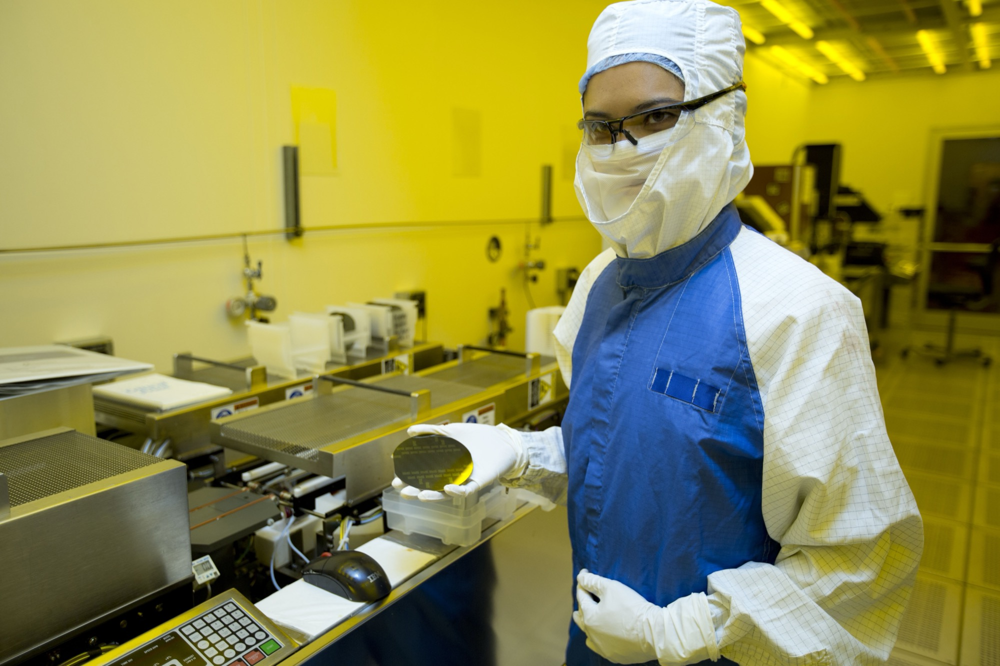
The wafer · Lawrence Livermore research, 2013A Lawrence Livermore researcher holds a wafer for neural-interface fabrication. The Department of Energy caption calls it a finished wafer. Its polished face illustrates the working surface, but the photograph doesn't establish its diameter or show a blank starting wafer.
light defines the pattern
Building the chip
A wafer travels repeatedly between tools. A representative patterning sequence adds a film, coats it with photoresist, exposes the resist to a pattern projected from a mask, and develops it to leave protected and exposed regions. An etch can then transfer the pattern into material beneath the resist. Other steps add insulating films or metal, introduce dopants, and polish surfaces before the next pattern. Each step has its own equipment.
The scanner must place each new pattern over the structures already there. Misalignment can break a connection or short neighboring features. Different layers need different feature sizes, so EUV and longer-wavelength deep-ultraviolet tools can work on the same advanced chip. The number of patterned steps isn't the number of metal wiring layers.
Coating · photoresist during spin coatingSpinning spreads liquid photoresist across the wafer and sheds the excess. Exposure and development will turn the coating into a temporary pattern. Resist thickness depends on the material and process; the red photograph doesn't measure it. The resist is later removed, while the transferred structure remains.
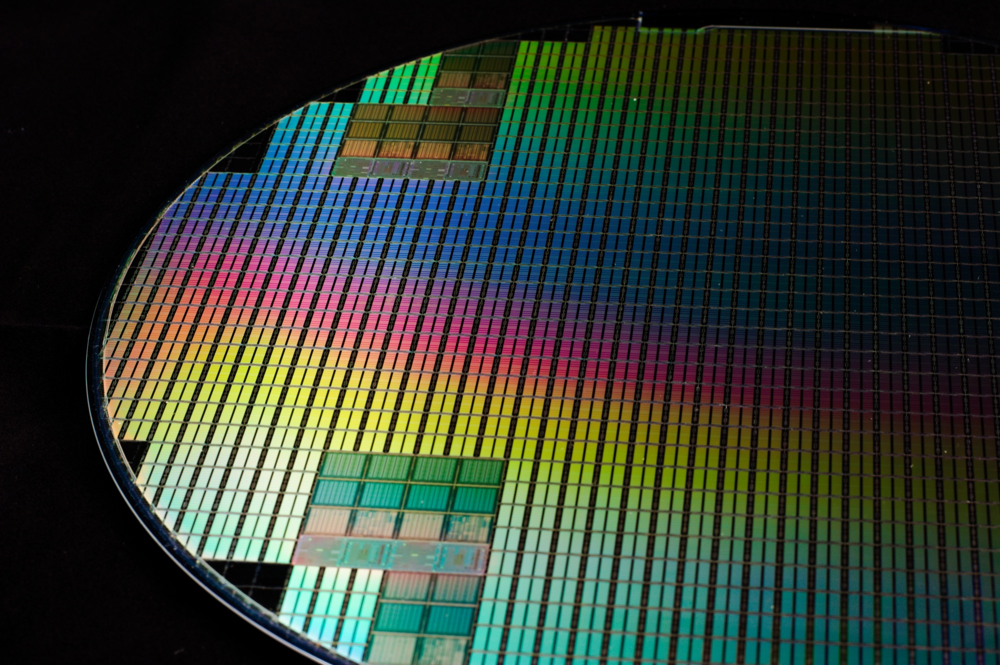
The pattern · a wafer photographed in 2019Repeated die layouts share one wafer. Fine patterns on a wafer can diffract reflected light, separating colors by angle. The rainbow doesn't show which circuits work. This 2019 photograph records a patterned wafer, without identifying its chips or processing stage.
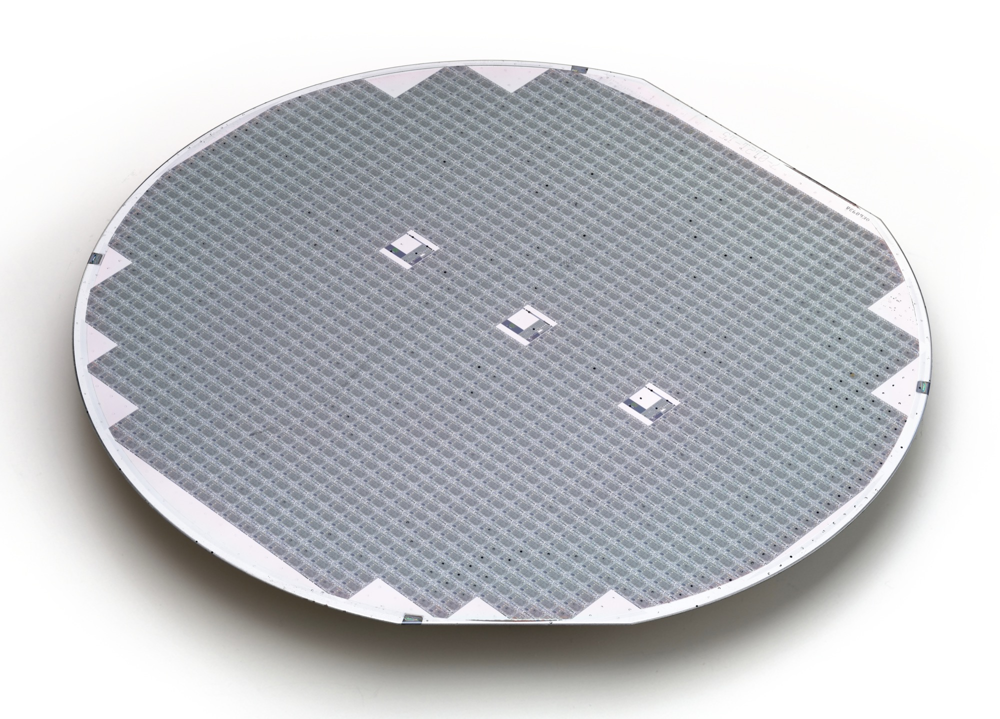
Dicing · a six-inch wafer of diesThe straight gaps between dies provide paths for separating them. Testing on the wafer identifies which devices meet their requirements before packaging; testing can continue afterward. This six-inch example is a different wafer from the one above. A wafer's die count depends on die size as well as wafer diameter.
one chip
Into the Apple M1
The next photographs show an Apple M1, introduced in 2020 using a 5 nm process. It predates the High-NA machine above. A die is the piece of silicon inside a chip package. From above, its large blocks are visible, but individual transistors aren't. The regular arrays and less regular logic regions reflect different circuit layouts.
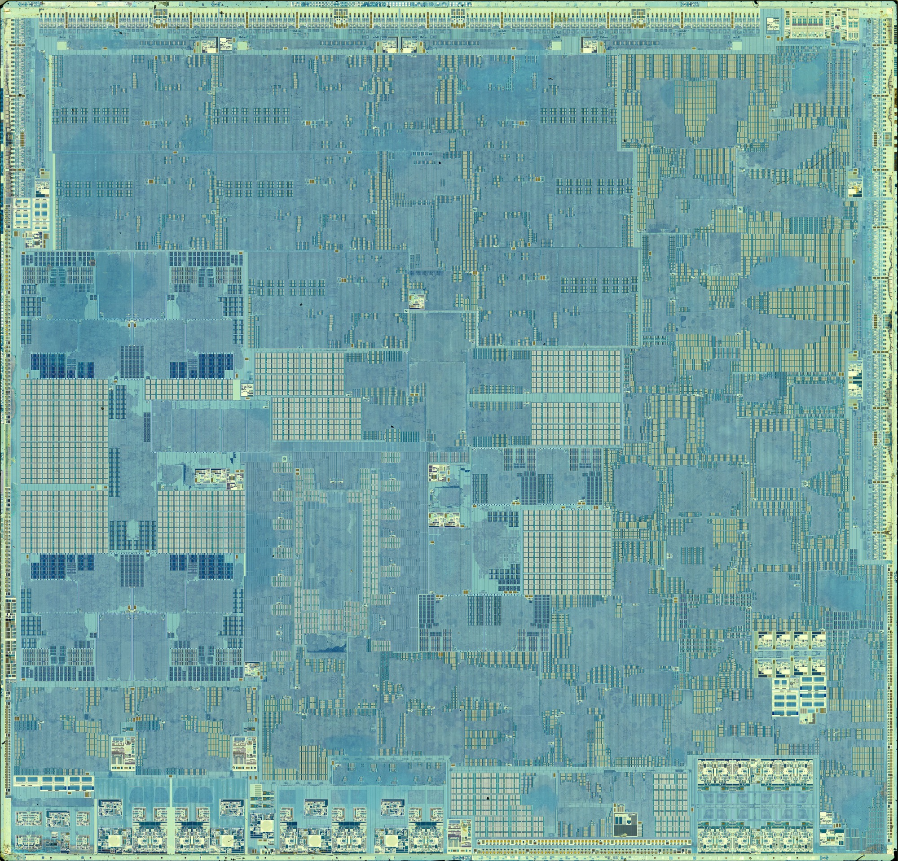
One die · Apple M1, 2020 generation · 16 billion transistorsFritzchens Fritz's optical die image shows the M1 after its package has been opened. Apple reports 16 billion transistors and eight CPU cores. The large blocks combine logic, memory, and the wiring between them. A die image can reveal their arrangement even when its smallest components remain unresolved.
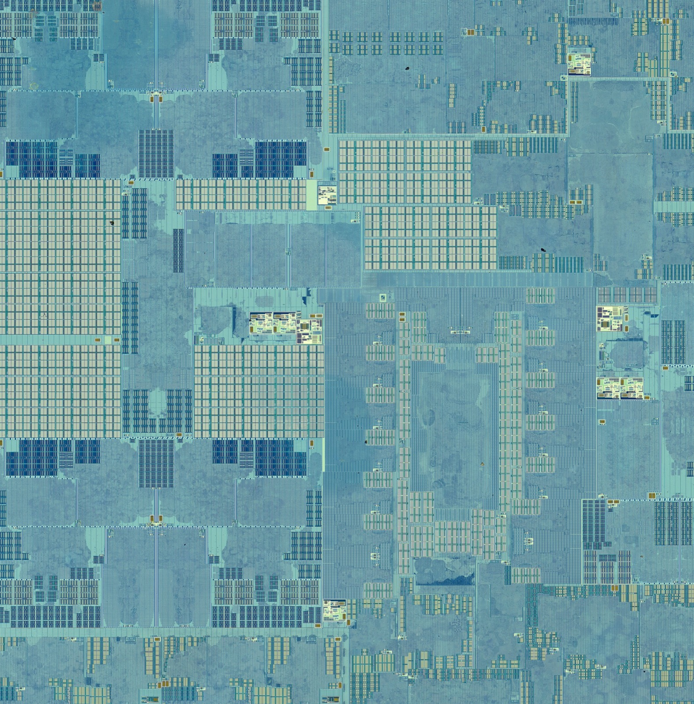
Closer view · Apple M1 detailThis detail retains the repeating arrays and irregular circuit regions visible in the whole-die view. Memory needs many copies of the same storage cell, which produces regular layouts. Logic follows the connections a particular computation needs. The crop shows those differences in texture without identifying every block.
electron microscopy
Wires and switches
To see the buried wiring, the specimen and the imaging method change. The cross-section below is from Intel's 14 nm process, published in 2014. It's an electron micrograph of a different chip. Metal lines connect devices within each layer; vertical connections called vias join layers. A slice cuts some lines along their length and others across it, which is why a connected network can appear as bars and separate dots.
Nanometer process names don't give every transistor or wire the same size. Intel's 14 nm paper reports a 20 nm gate length and a 52 nm minimum interconnect pitch, the distance between corresponding points on neighboring lines. The M1's 5 nm label also names a manufacturing generation. Use a measured dimension or a scale bar when comparing sizes.
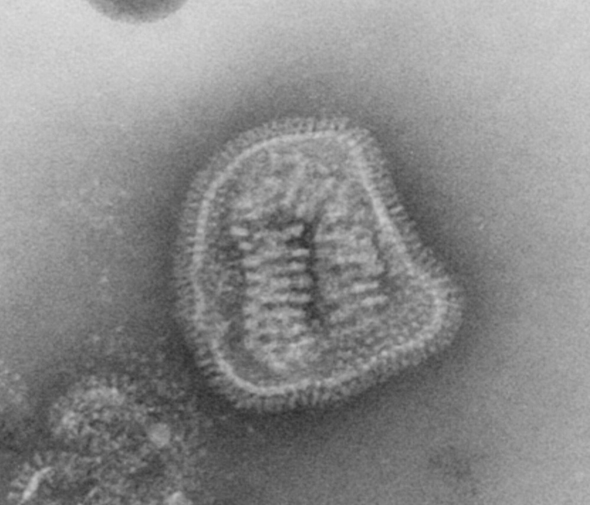
Influenza virus · separate magnification
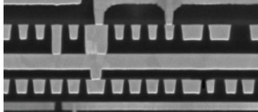
Intel interconnect · 14 nm process
Buried wiring · Intel 14 nm process, 2014Intel's original paper identifies this view as ten of its thirteen copper wiring layers and reports a minimum pitch of 52 nm. Beside it is a CDC transmission-electron image of influenza. Roughly spherical influenza particles are typically 80 to 120 nm across, comparable to a few minimum wiring pitches. These two displayed pictures have different magnifications. Their on-screen widths are not a common-scale measurement.
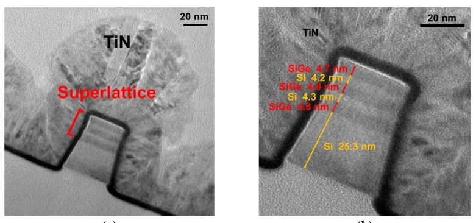
A research switch · Si/SiGe superlattice FinFET, 2023A FinFET controls current through a raised semiconductor fin. Voltage on the gate, which covers the fin's top and sides, controls that current. This Yao et al. experiment uses alternating silicon and silicon-germanium layers, visible inside the fin; TiN labels the titanium-nitride gate. The authors report a 30 nm fin width and 200 nm gate length. Each black scale bar represents 20 nm. It's a research device imaged in transmission, not an M1 transistor or a 20 nm-long switch.
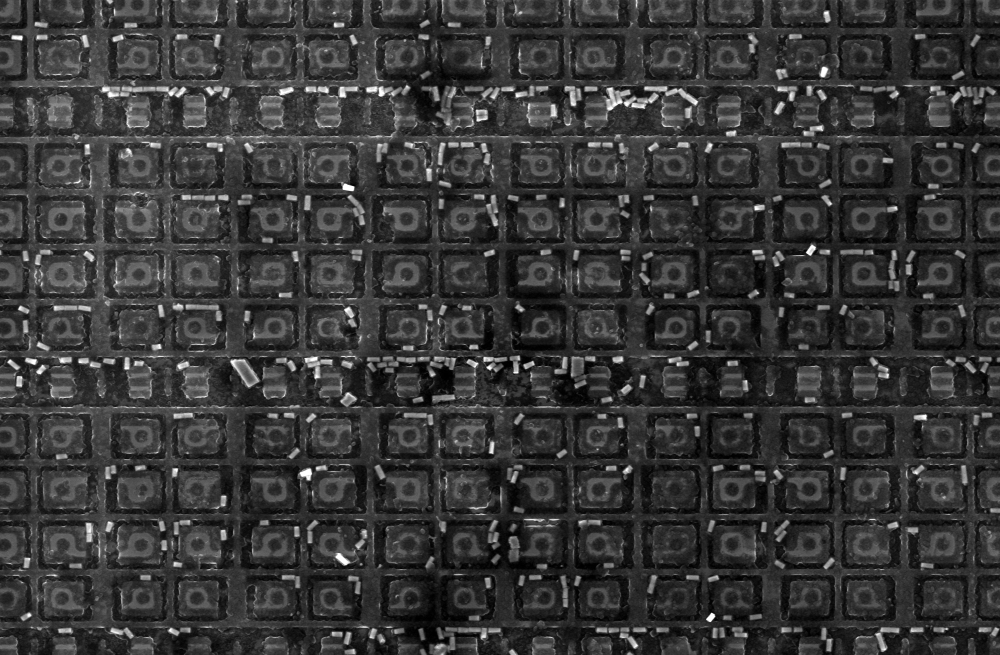
Another layout · ring gates in radiation-hardened memoryThese gates enclose a region of each transistor. NASA shows annular layouts among the design techniques used to improve radiation tolerance. Cumulative radiation damage and single-particle errors need different protections. This image illustrates a memory design made for a different purpose from the M1; a round gate alone doesn't establish how much radiation a chip can tolerate.
projected atomic columns
The silicon lattice
The final image changes specimens again. It's silicon viewed along a crystal direction called [110], reconstructed from electron diffraction measurements. The technique, ptychography, records how electrons scatter at overlapping probe positions and calculates an image from those measurements. The colors map the reconstructed signal; they aren't the visible color of silicon.
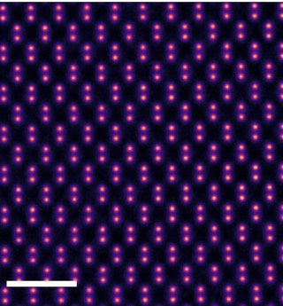
The crystal lattice · silicon along [110] · 1 nm scale barEach bright spot represents an atomic column projected through the specimen, with atoms lying behind one another along the electron beam. The paired spots resolve the structure of the silicon lattice. This is a crop of Suh et al., Figure 1b, published in Applied Microscopy in 2025. Resolving separate columns does not mean each spot is one isolated atom.
Sources and image credits
Technical sources are linked beside the relevant explanation. The image list identifies photographers, figure crops, and licenses. The Intel wiring micrograph retains its original IEEE copyright; publication in an open-access review doesn't change that credit.